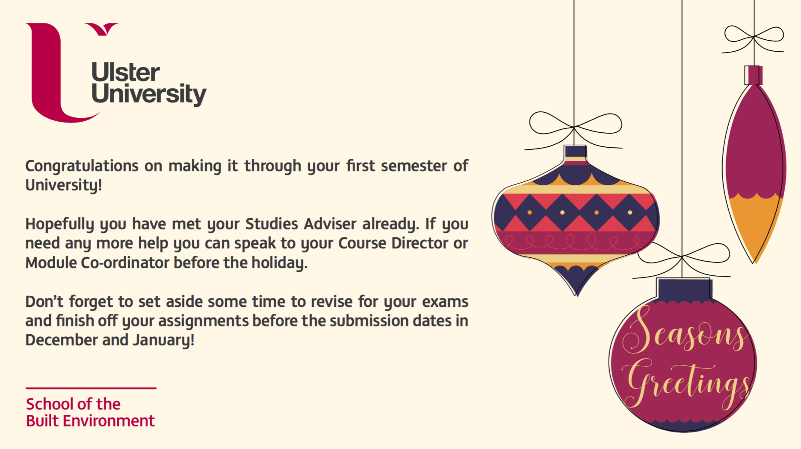
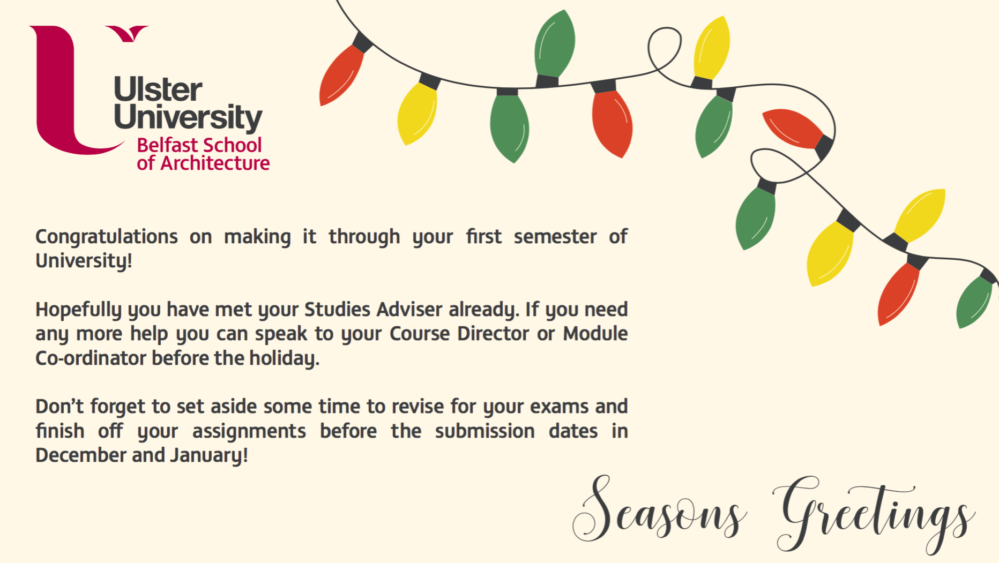

Eight
It's Christmas!

With Christmas right around the corner and the end of the semester approaching, the Faculty likes to send out emails to students in their first year to congratulate them on completing their first semester and transitioning into university life. These emails also serve as a little reminder to those students that University work doesn't stop at Christmas. This year it was decided that A3 sized postcards would be emailed to the students with a summary of the information from the email on it. That's where I come in...
I started off by highlighting the important parts in the email that I wanted to include in the postcard, making sure to keep the information short and to the point. I then moved straight into sketching ideas. I had to make three postcards; one for each School, with a festive theme.
The first postcard I made was for the School of Art. I decided to create illustrations of Christmas trees for this postcard. I styled them to look like they were drawn with a pencil, but kept it subtle. I played around with the positioning of the trees and decided on placing them to the right side of the card.
The second postcard was for the School of the Built Environment. I went for a slightly more sophisticated style of illustration but displaced the coloured fill from the outline, I thought it looked quite interesting. This postcard featured Christmas tree baubles. Instead of having the 'Seasons Greeting' as a heading, I incorporated it into one of the baubles. This one was my favourite design in the end, I really liked the colour palette and how it all came together, and how the modern style of the illustration reflected the type of work produced by the School.
The third postcard was for the School of Architecture and Design. I kept this postcard simple and created a flat illustration of Christmas lights, using curves and a slight messy feeling to keep it interesting. I positioned this illustration to the top right of the card and displayed the information in the remaining space.
As these postcards were to be sent through email to all students in the three faculties, I made sure to optimise each image and reduce the file size as much possible to ensure that they didn't eat up the space within the students' inboxes - my experience as a student meant that this didn't cost me a second thought as I have missed out on emails because of my inbox being too full a few times.
Phil was happy with how the cards looked but he decided that the Dean's sign off should be on it so I added in Professor Liam Maguire and Professor Paul Seawright's names onto the appropriate cards and they were sent off to all first years in the faculties. Liam Maguire then requested for the Built Environment card to have the Built Environment lock up device removed and sent round to all first year students in the School of Computing and Engineering also. In total around 1000 students saw my designs.